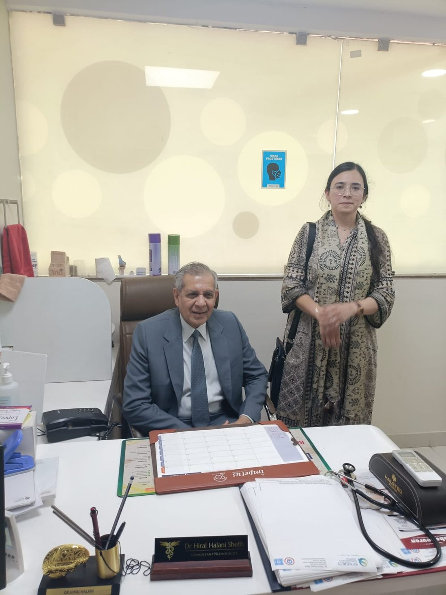

Consultant Neurophysician with Expertise in Neuro-Muscular Disorders
Dr. Hiral Halani Sheth
- MD Medicine
- DM Neurology · Gold Medalist
- DrNB Neurology
- Neuromuscular Fellowship · Bombay Hospital
What is treated here
Four areas of care, under one neurologist.
Nerve & Muscle Disorders
Weakness that does not fit an easy explanation.
See conditions → Done by the consultantEMG & NCV Testing
Nerve conduction studies and needle EMG.
What to expect → Time-criticalStroke & Emergency Neurology
Round-the-clock stroke care.
Know the warning signs → Full spectrumComprehensive Neurology Care
Headache, epilepsy, vertigo, Parkinson's and dementia.
See all conditions →Why this matters
An EMG is only as good as the hands that perform it.
Nerve conduction studies and needle EMG are operator-dependent tests.
When a technician runs the test and only the printout reaches the doctor, the finer findings are lost.
Dr. Hiral examines the patient first, performs the study herself, and explains it in the same sitting.
How this clinic works
Neurology is a bedside speciality first.
Examination before investigation
A neurological diagnosis is located at the bedside.
One doctor through the whole illness
Diagnosis, testing, treatment and follow-up stay with the same neurologist.
Explained in your own language
Families are told what the disease is and what to expect.
Training & lineage
Trained where India's nerve and muscle medicine is written.
After DM Neurology at Bombay Hospital, Dr. Hiral completed a further year of fellowship in neuromuscular disorders.
She continues to teach in that circle.

In patients' words
Reviews left on Google by patients and families.
Review
Review
Review
Reviews are reproduced from Google.
Awareness & academics
Outside the consulting room


Not sure which specialist you need?
Not sure which specialist you need?